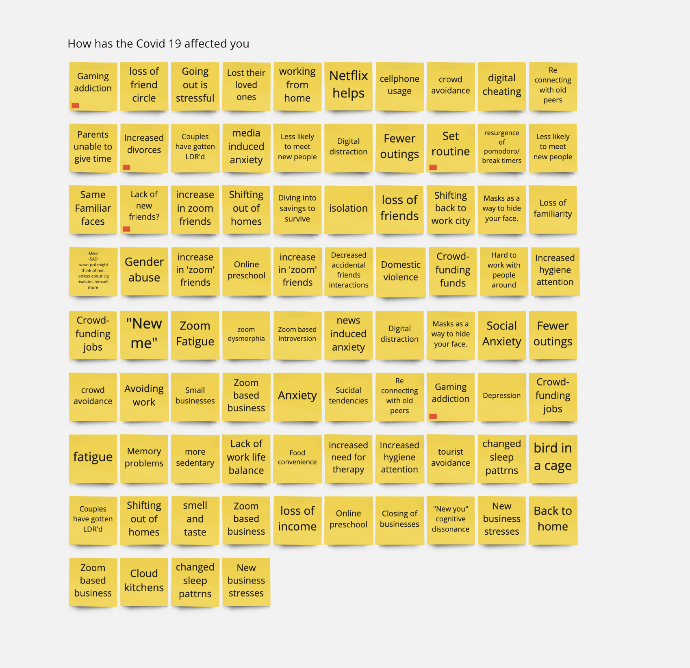

Identifying Area of operation
To start out we brainstormed over a short session to identify the various aspects of Covid 19 related change people have observed. changes that spanned across behavior, society, group dynamics, psychological, businesses, physiology and economies.

